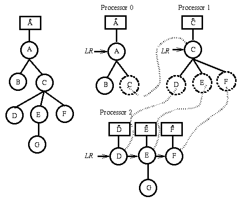

Distributed Octree

Parallel tree construction: A simple tree having root A appears
on the left above. Its data structure including bounding box
information is stored in Â. On the right, the tree has been
distributed across three processors. The dotted circles indicate
remote references. Only the remote location is stored in these cases.
All data associated with a node is stored on its assigned processor.
Each processor has a local root list denoted by LR, and each
local root has a data structure storing its bounding box and tree
level information.